Grok Bot Galaxy Day 3 — 何を言い、何が決まったか
ライブストリームの厚めノートを、時刻印を外した読み物にしたものです。会話の断片を並べるのではなく、誰が何を主張し、何が決まり、何が未決のまま残ったかが分かるように書いています。スクリーンショットは話題の近くに少数だけ差し込みます。事実は元ノートの範囲に限り、聞き取れなかった箇所は埋めません。
この日の結論（先に読む）
Day 3 は「today we're shipping our company」で始まった。3日目にして、スタジオ側は Thursday Arena という名前でゲームスタジオと最初のゲームを公開した。コードネームは Cupcake。ジャンルはカードバトルから、後に auto-battler と説明が着地する。公式チャネルは thursdayarena.com と @ThursdayArena のみ、それ以外は公式ではない、と何度も言った。
昨夜から回した software factory（Lauren の Potato Mode ＋ peestack）が、PR 実装・検証・（信頼が足りれば）auto-merge を一晩で回した。発言どおり一晩で 100本超の PR、クローズ済みは 〜170 前後（145→170 とゆれる）。コードは「一切見ていない」と正直に言いつつ、本番負荷に耐えた、というのが技術側の自己評価。スタックは Clerk（Login with X）＋ Vercel ＋ PlanetScale ＋ バックエンド Go serverless。型は REST 応答を Zod でパース。
数字は午後にかけて伸びた。リーダーボード 96人 → ユーザーほぼ 500、practice 600超、Sign-in with X 400超。数時間で 3,000 matches 超、Platinum tier 9人。円卓復帰時は 1000+ users、3500 practice、勝率 47%。ゼロイチの見方はマネタイズより「人が遊んでいるか・楽しんでいるか・入れ続けられるか」。
ゲスト側の主張は一日を通して近い。Grok Bot はチャットではなく 同僚。仕事を分解し、下書きまで任せて人間が最終判断する。Matthew（Marketing Ops）は revops を「ゲーム」として設計する。Vincent（Growth）は試合後シェアとカードのバイラルをプレイブックに書け。Blake（Post-Sales）は下書きのみ・会議代理。Josh Kim（Marketing）は thought partner ではなく doing partner。Cal Day は大規模コードベースでは人間の手動検査が限界で、エージェント監督へ移る、と言った。
スタジオ側が残したのは、広告枠／コールドメール／パートナーシップの実装、Elo／マッチメイクの不調、課金の手動残り、何を unship してコアループに集中するか、である。締めの自己評価は「ゲームスタジオがそれなりに建った」。
登場人物（この記事で名前が出る人）
スタジオ側（会社づくりの本体）:
- Matt（ホスト、Developer Experience。音声は SpaceX AI → xAI）— 進行、プロモ、工場の言い換え。
- Lauren（X: potato）— software factory、peestack、Potato Mode、実装。
- Motion（xAI プロダクト。Whisper: Rootian / Rochan）— ゲーム計画、成長プレイブック、ローンチ指標。
ステージ／ゲスト（製品説明と助言）:
- Matthew — Grok Bot for Marketing Operations。revops / marops の社内使い方。
- Cal Day — Northeastern の product/engineering 系。Cursor をエージェント基盤として使う話。
- Vincent（X: Vincent Zhu 系。所属名 Whisper「Smith's」ゆれ → 文脈上は Growth。確定できず「Growth の Vincent」）— Thursday Arena の成長プレイブック。
- Matt（収益・マーケ。午前の Marketing Ops 登壇者と同一系統、と元ノート）— ゲーム歩きと広告／アウトバウンド。
- Blake — Grok Bot for Post-Sales。AI deployment manager。Gus / Wally / Scout などの実ボット。
- Dan — 円卓ゲスト。3JS／テンプレ、コンシューマ／UVP。
- Josh Kim — Grok Bot for Marketing。thought → doing、職能ボットでキャンペーンを本番まで。
- Eric — ゲーム内ボット Import の説明で名前が出る（Karat 回の文脈は Day1。この日のノートは Import 実況）。
各節は、まず「この場面で何を話していたか」、次に「誰が何を主張したか」、最後に「決まったこと／残ったこと」の順で書く。
開幕・工場・Marketing Ops（Matthew）
seg01 · ストリーム 0:00–1:00
無音 / BRB（countdown）
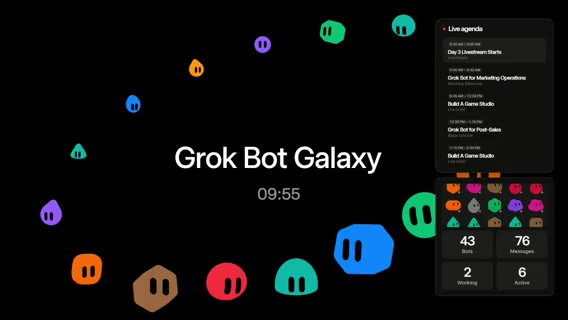
この場面: 「Grok Bot Galaxy」中央タイトル＋countdown（t=0 で約 09:55、t=60 で 08:55、t=150 で 07:25…）。右に Live agenda（Day 3 Livestream Starts / Grok Bot for Marketing Operations / Build A Game Studio / Grok Bot for Post-Sales）。下に Cupcake Eng 等の founding bots パネル。
無音。AAC ステレオはあるが mean ≈ −91 dB。発言なし。推測で埋めない。
決まったこと（方針）: Day2 冒頭と同様、実質スタートは ≈0:09:56。欠測は欠測のまま書く。
Day3 開幕・自己紹介・新規ユーザー1ヶ月無料
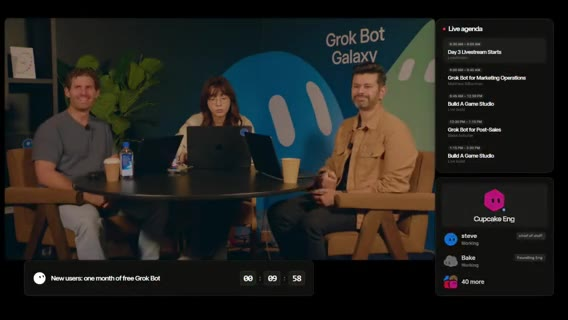
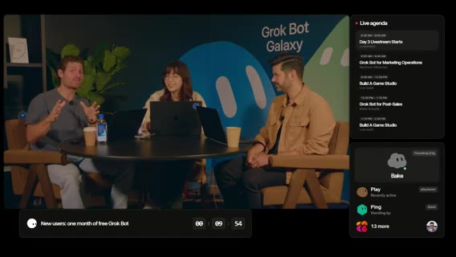
この場面: 円卓3人。右 Live agenda。下バナー「New users: one month of free Grok Bot」＋タイマー。
ホスト側が言いたかったのは、「We're back for day three」「today we're shipping our company」である。初めての視聴者向けには、72時間で会社を作る Grok Bot Galaxy イベント（SF）だと繰り返した。
自己紹介の意図は役割の再提示である。Matt は Developer Experience（音声は SpaceX AI → xAI）。potato / Lauren は Grok Bot 周り（Whisper: Patito / graph）。Motion（Whisper: Rootian）は Product on Grok Bot。
告知を工場の話より先に置いた。新規ユーザー向けプロモは、次の約10分以内にサインアップすると Grok Bot 1ヶ月無料。アカウント未所持者向け。過去2日視聴していても未登録なら対象。条件の骨子は、Grok Bot をダウンロード → アカウント作成 → recurring task（定期タスク）を1つ設定。potato が例をツイート予定: メール巡回、GitHub issues 監視、Slack 確認など「時間を食う作業」の自動化。クレジット込みでかなり太い無料枠。約 $200 相当 / 最高ティアの1ヶ月（発言どおり）。残り約9分で昨夜の進捗も話す、と方針を置いた。
決まったこと: 今日は会社をシップする日。新規は約10分以内のサインアップ＋定期タスク1つで1ヶ月無料。
ゲームスタジオ宣言・工場の仕組み・Potato Mode
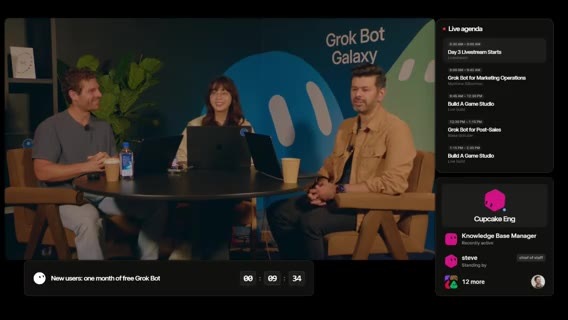
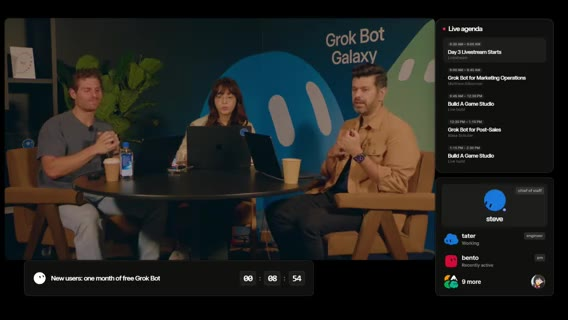
本題としてホスト側が主張したのは、ゲームスタジオを立ち上げ、今日最初のゲームをローンチすること。数時間以内。「army of Grok Bots」でゲームを構築。昨日午後から software factory を組んだ。
Matt の工場コピーは Lauren の bot templates に触発された、という経緯。Lauren（＋Motion）は、昨夜ゲームメカニクスと polish をブレインストームした。最初は 1v1 じゃんけん＋Elo＋リーダーボードだったが、遊んでみて面白くなかった。好きな他ゲームのメカニクスに着想してプラン再設計。Motion と Cloud agents で計画。
peestack / P-FAC は、Lauren 個人のスキルセット（Cursor プラグイン＋Motion プラグイン、聞き取り）。その中のスキル Potato Mode。主張している中身は、ボットをより厳密に・他ボット／エージェントのオーケストレーションを上手くする教え込みである。/potato mode ＋「full auto pilot this plan」→ 計画を小さなフェーズに分解 → ミニ工場: PR 実装エージェント、検証エージェント（アプリ起動・fuzz／クリックテスト・バグ発見）→ 信頼が十分ならマージ／フルオートパイロットで auto-merge。
一晩で 100本超の PR。クローズ済みは 〜170 前後（発言ゆれ 145→170）。UI リデザイン、バックエンド強化、セキュリティ／負荷対策など。
決まったこと: 今日シップするのはゲームスタジオの初ゲーム。工場は Potato Mode でフェーズ分解→実装→検証→（信頼があれば）auto-merge。じゃんけん案は棄却済み。
Play ボット（QA）・Routines・「工場」の意味
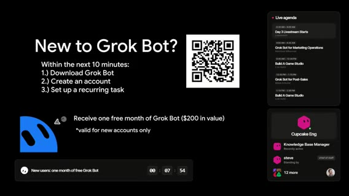
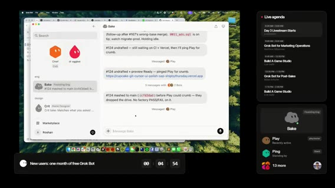
この場面: Grok Bot アプリ「Bake」（Founding Eng）のチャット、PR #124 mashed to main、Play が playtester。Live agenda＋無料タイマー。
デモで見せたのは、PR #124（UI）をマージした直後のボット間通信。ボット Play = playtester / QA。昨日いたインターンは今日いないので QA ボットが PR を見る。subscription / recurring task / イベント応答は、CI が緑の PR を見たら自動でプレイテスト、UI を end-to-end で操作、ゲームエンジン理解に基づくフィードバック。
Lauren の留保は、「factory」という語は好きではないが、自動化の近い比喩だということ。エンジニアでなくても反復タスクは多い（メール忌避など）。Grok Bot に inbox / Slack / GH PRs を教えれば自動化できる、と推す。プロモ残り約2分20秒の再告知（アカウント＋recurring task）。
Matt の要約: software factory の本質は エージェントが自分で回せるフィードバックループ。人手の UI クリック・検証・ログ確認を減らし、正しいコンテキストを渡す。ソフト開発だけでなくメールやビジネスオペにも同じ。会社を AI で作る＝人間ワークフローを分解し、エージェントがやるべき部分を切り出す（スパム除去・下書きは可、送信判断は人間、等）。
この時点の結論: 工場とは PR 量産そのものではなく、エージェントが回せる検証ループである。危険な送信判断は人間に残す、と Matt が明示した。
ゲーム UI 初披露（コードネーム Cupcake）
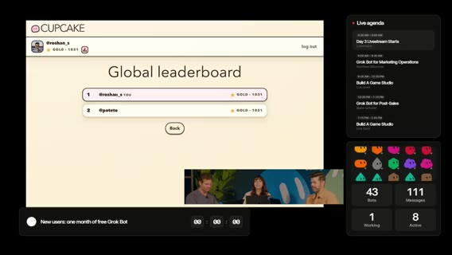
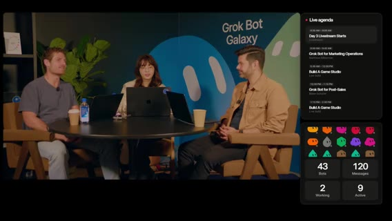
プロモ残り約1分。並行して Matt が UI polish 用ボットを追加起動。ゲーム UI を見せるか議論（スクロール問題など「恥ずかしくないなら」）。
コードネーム Cupcake。正式名はローンチ時に発表予定。「stay tuned」。Login with X（Twitter） 動作。グローバルリーダーボード。ゲーム画面共有（カード／対戦／リーダーボード系 UI。細部は画面依存）。スポンサーシップフォームがメインに残っていて後で移す必要あり、とコメント。「mid-game に捕まえた感じ」として、工場がまだ磨き中だが動き続けている。
残ったこと: 正式名は未公開。スポンサーシップフォームの配置、スクロール等の UI polish。
ティア／競技・ロードマップ・Steve・遷移前
視聴者にも platinum tier などを競えるチャンスを、という言及（ゲーム内ランク／チャレンジ、聞き取りやや不明瞭）。ゲーム知識とオフカメラ作業のつなぎ。音楽ボットは未優先だが Suno でトラック生成済み。「annoying nice」な音楽にする約束。
今日はローンチして終わりではなく、アプリを継続更新。昨夜オーディオデザイン、3D プロト（アニメ／キャラ）もボットが試作。チャットに UI polish / メカニクス案を求む。
本番の Live agenda と画面上の bots を紹介。Steve = chief of staff ボット（ショー運営）。Cupcake 関連ボット。Lauren も自分の chief of staff を Steve に改名した話で笑い。最初のトークまで約3分 — Grok Bot for Marketing Operations。今日はゲームスタジオ立ち上げ＆初ゲーム公開日。視聴者プレイ→フィードバック→自動 feature factory へ。
Login with X でエラー報告。サーバ側ログを見て Grok Bot に渡す、というリアルタイムデバッグ。「Grok Bot に渡せる仕事に本質的な上限はない」方向の話の途中で音声が途切れる。
決まったこと: 今日は公開して終わりではなく、視聴者プレイ→工場へ戻す。Steve がショー運営の CoS。
残ったこと: Login with X のエラーはデバッグ中。音楽ボットは未優先。正式名はまだ出さない。
無音 / Be right back（ステージ移動）
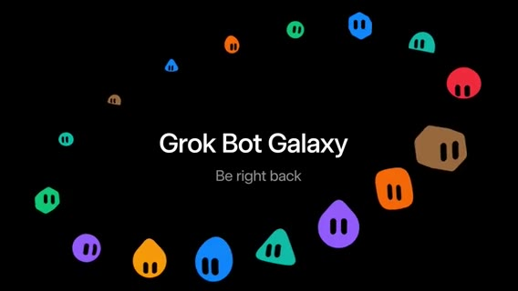
無音（mean ≈ −91 dB）。約 5分57秒。発言なし。捏造しない。
この場面: 「Grok Bot Galaxy / Be right back」＋キャラクターリング。円卓からメインステージ（Marketing Ops トーク）への移動想定。音声は欠測。
Matthew — Grok Bot for Marketing Operations 開幕
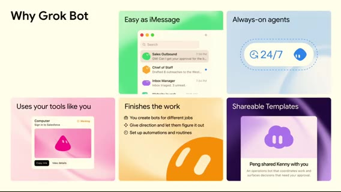
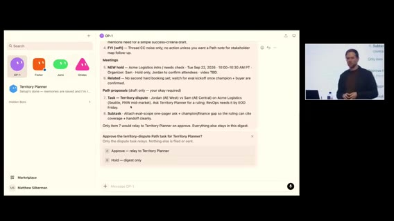
この場面: スライド「Why Grok Bot」— Easy as iMessage / Always-on agents / Uses your tools like you / Finishes the work / Shareable Templates。
発話再開。モデル改善で「より真になる」前提の続きから。always-on agents — ノートPCを閉じても止まらない。自然言語でボットに話し、権限を把握し、夜通し価値を出す、という「Why Grok Bot」の流れ。
登壇者は xAI 内部の revops / marops での Grok Bot の使い方を共有（アジェンダ上の名前: Matthew。Whisper 姓名ゆれあり → 画面 Live agenda「Matthew … Marketing Operations」に合わせる）。会場挙手: revops/marops、GTM engineering / systems。
キーメッセージは、rules だけでなく tools を建てられる。キャンペーン設定チェックリストを配るだけでなく、ルールを守る内部アプリ／インフラを作れる。マーケ／セールスが「ゲーム」をプレイし、ops がそのゲームをデザインする。デモ前に自分のボット軍団を紹介（音楽ガジェット由来の名前）:
- OP1 — synthesizer メタファー / Chief of Staff 的に仕事を回す。
- Fisher — 全 inbox 受信（email / calendar / SMS / Slack）
- Juno — PM ボット（要件・コーナーケース）
- Owned（Whisper: owned）— engineer ボット（CRM・DWH・内部ツールコードベース）
デモ1: Self-completing task list
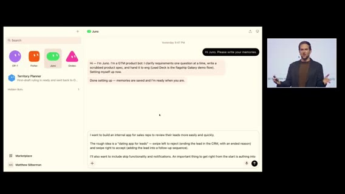
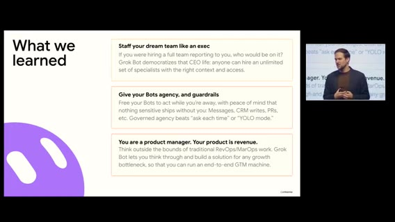
Matthew が主張した revops の本質は、ステークホルダー管理＋優先度判断（生産性オタクとして半五年）。self-completing task list が第一デモ。
ボットが全 inbox を監視し、実タスク vs FYI を蒸留。デモ中も Fisher が 9:04 の定期ルーチンで inbox を吸い、OP1 に email/calendar/work chat のサマリーをプロアクティブ送信。通知オフでも重要だけ浮上 → コンテキストスイッチ削減。ボットはメッセージ単体だけでなく Slack スレッド全体を読み、「相手が何を求めているか」を蒸留。
Fisher＋OP1 がタスク化 → 例: AE 間の territory dispute → territory planning bot へリレー（ROE・CRM 文脈付き）→ 成果物の第一草稿まで。人間は検証・最終化。「本当にチームがいる」として、監視・蒸留・専門ボットへの委譲・監督。
デモ2: 「リードのマッチングアプリ」（社内）
社内の dating app for leads（比喩）。マーケ→セールスのハンドオフが古典的に壊れる問題（リード放置、フィードバック欠如）。AE が自分のリードだけ見て、左スワイプで end（理由必須→CRM 正しい書き戻し）、右スワイプでフォローアップシーケンスへ。ops は SLA 説教ではなく「ゲーム」を設計する。
Juno（PM）に「内部アプリ案＋CRM 双方向が最重要」と依頼。従来 AI はすぐコードに走りプロンプト不安を生む。Grok Bot は良いフォローアップ質問をする（フィルタ、accept 時の CRM フィールド変更の有無、オフライン操作の確認など）。
例は、accept 時は CRM フィールドを変えない — 実ステータス変更は「レップが連絡した瞬間」で既存オートメーションがある、と人間が深く考え直す。Juno が仕様を起草し、促されず Owned（eng）へハンドオフしてビルド開始。「チームが end-to-end で動く」感。
完成 UI デモ（モックデータ）は、カードにリード情報、左 end / 右 sequence、流入経路など。アイデア→実装は約2週間、うちライブビルド実質 約10時間。残りは導入・フィードバック。採用後リード review 率が急上昇。AE もマーケも高品質フィードバックを好む。会場挙手: AI なしで同等プロダクトを作れる人はほぼ片手。AI／このデモ後は多くの手が上がる。
教訓スライド → Q&A へ
Matthew の教訓は3点。
- フルチームを雇えるなら誰を入れるか — Grok Bot は「CEO 的な雇い方」を民主化。無制限に専門家を文脈付きで雇える。
- ボットを信頼しつつガードレール — 権限を把握したうえで大きなタスクを任せ、出荷前に必ず戻す（CRM 書き込み、PR 等）。
- ルール屋ではなく PM — プロダクトは revenue growth。Dreamforce 週という文脈で、GTM のボトルネックを見つけて潰すのが仕事。人間関係・信頼・要件蒸留のあと、実際に建つ。
本編終了、質疑へ。
Q&A（WhatsApp / コネクタ / 1Password）
質問は、WhatsApp をマーケ用途で Grok Bot と連携するには？登壇者: ネイティブ WhatsApp コネクタの有無は断言せず。個人的には Beeper のようなメガチャットをボットのコンピュータに入れて、アプリを人間同様に使う手がある（ネイティブ連携がなくても可）。
別質問: Meta / Google 広告などネイティブ認証が切れる問題。ロードマップは？詳細ロードマップは話せないが、昨日発表の 1Password 連携: パスワードボルトをボットと共有 → トークン／ログイン切れを監視するルーチン → 必要ならボルト経由で再認証、というパターン。
質問者の夢: 広告モニタ→予算増減→新規広告作成のループ。登壇者: revops 的には元来「システム／プロセス／ワークフロー理解」が仕事。その傾向を AI に載せると自動化になる。複雑な仕事の分解が鍵、と締めに入り 1:00:00 でセグメント境界。
Marketing Ops 前半の結論: ops はチェックリスト屋ではなく、ルールを守る内部アプリを建てる側。人間は検証と最終化。WhatsApp ネイティブコネクタの有無は未断言。広告認証切れの詳細ロードマップは非公開。1Password 連携は「昨日発表」として提示された。
Q&A・BRB・Thursday Arena ローンチ
seg02 · ストリーム 1:00–2:00
Q&A続き：仕事の分解・ボットと人間の関係・職の価値
前セグメント末の続き。複雑な仕事はチャンクに分解（例: 広告プラットフォームログイン→分析、レポートDL、他データと照合…）。非AI世界でも詳細手順を書ける人ほどボット化しやすく、専門ボットをタンデムで回せる。質問は、ボットが進化するならマーケスタックの何が先に消えるか。ボットと人間の関係は？
Matthew の答え: 鏡（mirror）。思考パートナーとしての Q&A で、ボットが自分の見落としを突く → 自分が深く考える → またボットに返す。「AI をプロンプトする」だけでなく AI がこちらをプロンプトする。消えるスタックは断定しにくい。複雑なツールのボタン知識は残るが、コーディングと同様に参入障壁は下がる。ゲートキーパーとしての価値は減り、高次の思考・システム直観・taste が残る。メニューマスター志望者は少ないが、面倒な作業が思考を遅らせ深める効果は AI と同様にある。ボタン配線・インテグレーション作業は減る方向。
マルチプレイヤー／Tesla／Juno テンプレ／セールス反応
質問は、各自が自分の Grok Bot を持ち同じプロジェクトを進めるとき、エージェント同士の調和はどう考えるか。ボットが個人の思考を学習するが個人最適に閉じる問題。登壇者: 会社として先走りはできないが、まもなくこれに応える面白いものが出る、と示唆。ホスト側も「みんな multiplayer を待っている」と茶化す。
会場は、「Grok Bot on Tesla？」→ 答えられない／親も Tesla 持ちで同じ質問が来る、と笑い。Max は、Juno テンプレは？ → 今日見せたボットは後でテンプレとして共有できるよう手配する。
セールスの反応は？ → 大好き。通勤電車で左右スワイプしてリード処理、隣席には何のアプリか分からない。数週間で lead review rate が記録更新。5タブ・多数メニューより圧倒的に良い。ジョークとして、「人生に別のデーティングアプリは要らない」→「でもこれはデートが成立するとお金になるデーティングアプリ」。signal→SQL のコマンドセンターへ拡張余地。Grok Bot のおかげで積み上げ続けられる。
人間が残すべき仕事・Starship チャレンジ告知・トーク終了
最後の質問: AI ができても 人間がオーナーであるべきタスクは？関係・信頼・問題解決。4歳で revops/marops を知る人はいないし、今日100%説明できる人も会場で挙がらない——人間が作った概念。肩書きやツールに依存せず、関係を築き問題を解くことが常に仕事。
画面でチャレンジ発表: X で「なくてはならない Grok Bot」を共有 → 当選者＋ゲストが Starbase（Texas）で Starship 打ち上げ観覧のチャンス。応募: @grok と @bot をフォロー → チャレンジ投稿を quote → ボット説明＋共有テンプレリンク。QR あり。「good luck」。感謝でトーク終了。
Marketing Ops 全体の結論: ボットは鏡であり、taste と関係構築は人間に残る。マルチプレイヤーは「まもなく面白いもの」と示唆のみで未出荷。Juno テンプレは後で共有予定。Tesla 連携は答えられない。
BRB／低音量（発話キューなし）
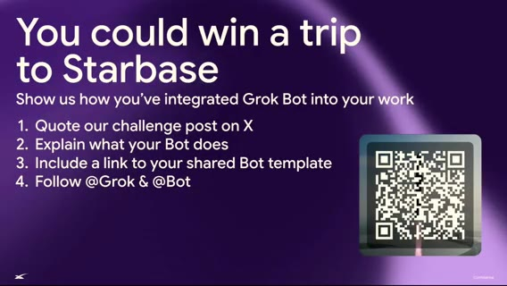
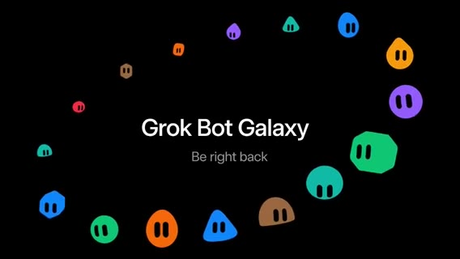
一瞬「Okay, we're back.」のあと、Whisper cues が途切れ ≈1:21:04 までギャップ（約10分）。音声は、区間の mean は ≈−40〜−45 dB（完全無音の −91 dB ではない）。環境音／BGM の可能性。明確な発話キューなし → 内容は捏造しない。
この場面: Be right back 系／ステージ切替想定。
Welcome back：カードバトル・工場・Clerk／DNS／ドメイン未公開
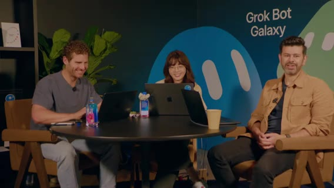
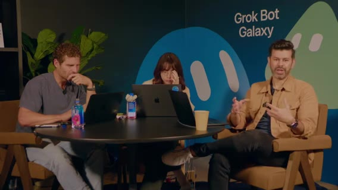
「Welcome back」。Day3、ゲームスタジオ＆初ゲームをデプロイ中。Grok Bot でゼロから事業／ゲーム。クライアント／Web secrets 管理中——本番シークレットは配信に出さない。
ゲームは card battle 系。UI polish パス進行中（「期待値を下げて」と茶化しつつ改善中）。SF の Grok Bot Galaxy 会場。下りでトーク、上りでスタジオ。日中カットイン多数／ゲスト可能性。午後はマネタイズ・マーケ／レベニューの xAI メンバーも予定。
目標: アプリを live → プレイ中フィードバックをアプリ内へ → play test → embarrassed なら ship の古典に従い今日中に反復。工場: 自動バグ修正・自動プレイテスト・自動 PR レビュー。本番バグ検知 → Cloud agent に PR → Play tester がエンジン通し → CI と合わせて承認。Grok Bot × GitHub。
Clerk で Login with X。Elo／リーダーボード／practice mode。今はドメイン・DNS・CORS の詰め。「It's always DNS／sometimes CORS」。スタック: Clerk（認証）＋ Vercel（ホスティング／preview を playtester が叩く）＋本番 hardening（DB・ingress・セキュリティ）。PlanetScale で負荷試験済み。ゲームストア用 DB 群。ドメイン名はあるがまだ非公開。まもなく名前公開。
決まったこと: 本番スタックは Clerk + Vercel + PlanetScale。practice mode と Elo／リーダーボードあり。シークレットは出さない。
残ったこと: ドメイン名はまだ非公開。DNS／CORS 詰め。UI は polish 中。
Ops スタック・フィードバック triage・コンテキスト管理
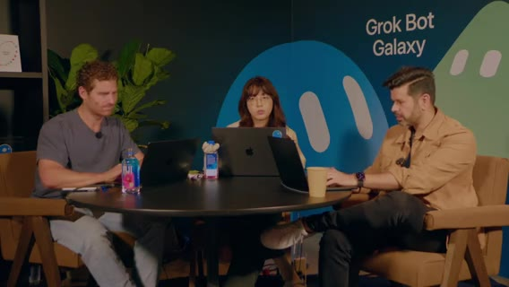
Slack（バグ報告チャンネル等）の ops スタック。ボットが人間より速くツールを使う。xAI 内部でも issue 投稿 → triage ボットが再現・ログ・担当提案。エンジニアリング作業の節約、接続作業としてのソフト開発、コンテキスト管理の話が続く。工場の「何をボットに覚えさせるか」が品質を左右。3人＋多エージェントだとプロンプト差分で品質低下リスクがある、という認識。コンテキスト管理の具体・クリーンアップ項目の列挙（UI 粗・バグ・文言）。画面共有で工場／PR 状況。
ゲーム内コンテンツ・経済・手動プレイテスト案
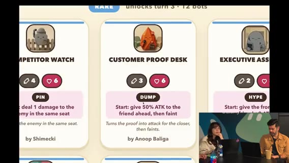
自チームのランキング／スポット表示の確認。writing bot など役割ボットが稼働。デザイン／バランス議論（カード売却でゴールド等の経済）。「売るとゴールド1」系ルールの言及。fuzz／ステップバイステップ体験ウォークスルー。人間も一斉に入って手動プレイテストする案。気に入った bot template を作ってくれれば、という視聴者向け呼びかけ。
経緯振り返り・Thursday Arena 名公開・公式アカウント注意
Day1 遅く〜Day2 初めにアイデア確定、という振り返り。正式名公開は、ゲームスタジオ／ゲームの公式は @ThursdayArena（X）と thursdayarena.com のみ。それ以外は公式ではない、と明言。フォロー促進がサイドクエスト。Lauren: Apple 絵文字 PNG 化ツール（emojis.…）でカップケーキ絵文字を仮プロフィールに。favicon / OG / SEO・AEO はこれから。
決まったこと: Day3 最大のマイルストーンとして Thursday Arena 名を公開。公式チャネルはその2つのみ。
残ったこと: favicon / OG / SEO・AEO は未了。
リーダーボード急成長・Launch pulse ルーチン
リーダーボードに 96人 → すぐ増加。サインイン動作確認。Motion は、ローンチ用ダッシュボードをボットに依頼中。15分ごと Launch pulse（サインアップ、practice 数、practice→本番アカウント転換ファネル等）。xAI 内部ローンチでも同手法。
実況: Motion 1位、Ben J. Bush 2位、Lauren 順位下降… 更新頻度を1分にしたい話。フォロワー 225。同時接続数も欲しい。「まだ落ちていない」ことに感心。Ben が1位に。リーダーボード賞の話は近日。ユーザー数急増の声。
peestack で無査読マージ・Go／PlanetScale・型安全
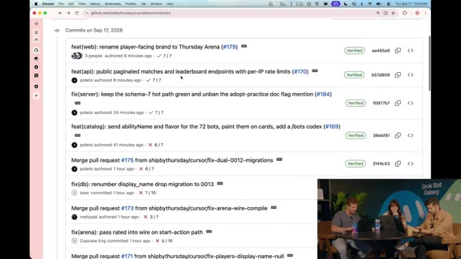
昨夜工場フル回転。Potato Mode + peestack で「巨大な X 群衆に耐える性能」を指示。コードは一切見ていないと正直告白——それでも耐えている。ユーザーほぼ 500。バックエンドは Go の serverless（Whisper: herself→Vercel functions 文脈）。DB は PlanetScale。
FE/BE の型同期問題。REST。応答を Zod（Whisper: pod）でパースしネットワーク越しの型安全を担保する現実的アプローチ。理想設計にはまだ時間不足だった、と。thursdayarena.com への QR 要求 → もう出ている。
この時間の技術結論: 無査読マージでも負荷に耐えた、が正直さのハイライト。Go serverless + PlanetScale + Zod 型ガードが工場の土台。理想設計は後回し。
ローンチメトリクス・Hockey stick・ゼロイチの見方
Motion 画面: Grok Bot 上の founding eng が issue を聴き続けている。ローンチ指標はダッシュボードサイトよりボットに聞いた方が速い。Hockey stick チャート登場。practice sessions 600超。practice→Sign in with X 転換などファネル。Sign-in with X 400 超（既に過小表示の示唆）。「funding 取りに行こう」ジョーク。
ファネル離脱、リテンション、将来のマネタイズ指標の話。Lauren→Motion: PM として何を見る？ → ゼロイチではマネタイズ前なので Bay Area Growth Machine 的に「人が遊んでいるか・楽しんでいるか・入れ続けられるか」が最優先、と 2:00 境界へ。
決まったこと（見方）: 今見るのは engagement / retention。マネタイズ指標は後。
工場運用・Cal Day・Growth（Vincent）
seg03 · ストリーム 2:00–3:00
ゼロイチ指標・マッチメイク／Elo の不調
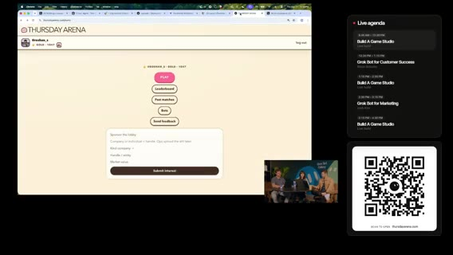
前セグメント続き。プレレベニューなので収益より engagement / retention。ファネル完走・再訪。将来は中小ビジネス成長支援も視野、だが今はコーヒー代もまだ。ゲームメカニクスが最重要。自分たちも大量にプレイして感触を取る。
現状は loss heavy。AI マッチメイクが怪しい可能性。相手プールから消える／スナップショット不整合の疑い。上位ほどポイントが取りにくい設計の言及。Elo 表示バグ候補。Ghost Players / AI players / unknown の内訳。勝敗は負け過多。
残ったこと: マッチメイク／Elo は不調。メカニクスが最優先の未解決。
データ接続・プラグイン・リーダーボード実況・フィードバック導線
ボットが情報を集約できる話。プラグインがあれば何でも、なければエージェントに直接指せる。自分の順位（27位など）をどう上げるか実況。Lauren のフィードバックループ論に接続。外側データ→内側エンジニアリングループ。視聴者向けの面白い参加導線を追加作業中。
Steve（chief of staff）経由で、ユーザーフィードバックを受ける Slack チャンネルのリンクを案内。チャット勢への感謝。Slack にフィードバック送ってほしい。Motion が作ったばかりのボットにフィードバック閲覧を指示。ゲームプレイ系 vs 実バグの多数派を把握。Matt 画面で生フィードバック。自分のプレイテストで「cannot buy new」等を発見し自分でも issue 化。バグ修正大量。Slack に集約。
フィードバック監査・フィルタ・優先度・OG
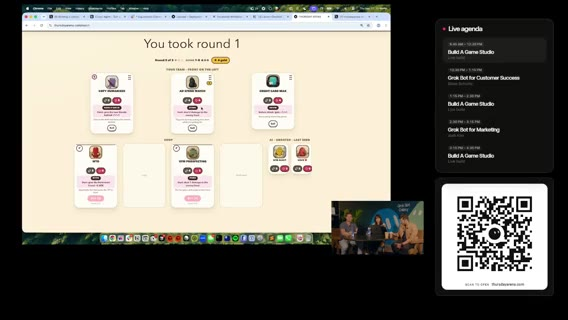
フィードバックを監査済み。バグ／要望／感想が混在。ネットの自由記述は危険 → サーバ側 profanity フィルタ、xAI モデルでの追加防御、rate limiting。負荷でサーバを潰さないよう注意しつつフィードバック閲覧。例は、「金を買えるようにして play-to-win／収益化」要望、Elo 関連、バグ／要望／感想の混在。
優先度の付け方を議論（Motion↔Lauren）。「Oh no」系のライブインシデント反応（詳細は画面依存）。Lauren は、社内でも類似プロセス。フィードバックをカテゴリ分けして俯瞰。モバイルレイアウト問題が先。AI-only／ランクマッチ問題も。新機能欲と安定性のトレードオフ。光る新機能より 美しい体験を執拗に磨く。バグはフィードバックのごく一部、と優しいチャットに感謝。ジョークとして、potato 配列ギフト／「Elon が X の新サブスクかも」。Twitter にリンクを貼ったときの OG／プレビューがどう出るか確認中。リンク共有時にちゃんと見える V1 OG 画像。ビジネスの基本メタ整備。
決まったこと: フィードバックは Slack 集約。profanity フィルタ＋モデル防御＋rate limit。優先はモバイルと体験の磨き。play-to-win 課金要望は記録のみ。
工場エンジン再説明・triage・verification swarm
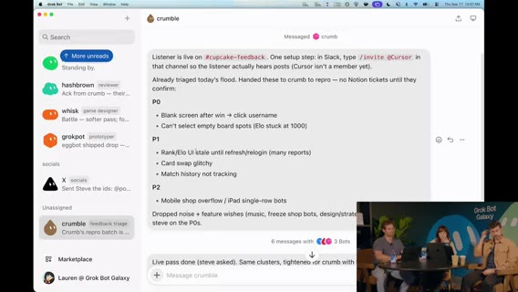
今朝話したコーディング・エンジン／工場の再掲。3人＋複数エージェント＋異なるプロンプトでの協調。ボット作成を担当するメタボット的な役割。triage ワークフロー: 確認済みバグ用。peestack 上のスキル名の説明。
verification swarms は、swarm スキルが Cursor 上で多数の Cloud agents を spawn。各エージェントが別マシンでゲームを起動しクリック／fuzz（パワーユーザー的にエッジケースを潰す）。人間のクリック労働を減らしつつ、人間 fuzz も併用。Vercel / PlanetScale / Slack フィードバックを Grok Bot に接続 → 外側ループと内側（実装）ループが噛み合うと、理論上 バグが自動修正されゲームが継続改善。Dr.Eggbot に設計相談した言及（聞き取り）。エージェントシステムのセットアップに時間を投資するレバレッジ。ボット同士の役割が見える状態が強い。
番組案内・公式ドメイン再掲・ゲスト Cal Day 導入
番組アップデート: 約 11am PT。ゼロから事業／ゲームスタジオ。thursdayarena.com と @ThursdayArena のみが公式。11:15 に Vincent（マネタイズ／成長）。その前に本番向けビデオ挿入。バグ修正は継続、フィードバック歓迎。玩具ではなく事業にする話へ。
ゲスト Cal Day — Northeastern の product/engineering 系 SVC（肩書き Whisper ゆれ）。大規模コードベースの手動検査は困難 → Cursor で早期結果、という話の導入。エージェント監督＝アーキテクト、ツールを呼び大規模協働、という論点。
Cal Day：50M 行は手動検査できない。エージェント監督へ
Cal Day の主張: Cursor をエージェント・プラットフォームとして使い、職務ごとに特化したエージェントを「席にいる人間」のパートナーに。高速イテレーション → 顧客経済性（ユニットコスト・満足度）。レジリエンス／信頼性／セキュリティは「速くやる」だけでは足りない領域もある、と。
「船を焼いた」として、今年の計画がこれに懸かる。プロダクトは 50M+ 行規模。モノリス分解の途上。手動検査は絶望的 → Cursor 初期分析が驚異的。従来なら専門家十数人・数ヶ月を、2人で数週間級に。顧客影響欠陥の RCA も巨大コーパスに対して加速。次は multi-agent 配備／オーケストレーション。エンジニア／アーキテクトは エージェント監督へ。SDLC 全体を再設計中。
Cal Day の結論: 規模が大きいほど手動は限界。速さだけでは足りない領域（信頼性・セキュリティ）もある。次は multi-agent。
字幕欠測（音量あり）
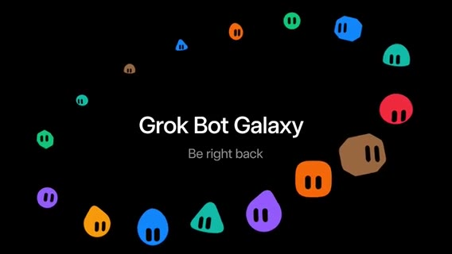
事実: cues が約 370秒 途切れる。volumedetect は mean≈−30〜−36 dB で完全無音ではない。「Welcome back」のあと cues が細り、2:44:19 まで欠測（ビデオ残り／切替の可能性）。方針: 内容は推測で書かない。画面フレーム t0238*_gap.jpg 等を参照。
Motion 再導入・Vincent（Growth）参加・初手アイデア
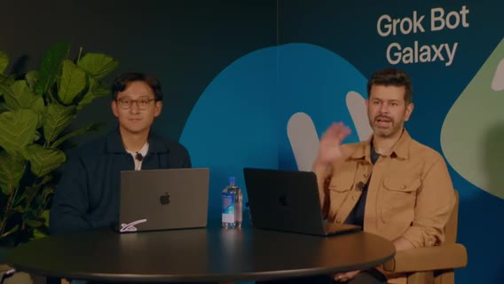
Motion（X: 音声 Roation → Motion）は、3日目。火曜は物理ポップアップ案 → ゲームスタジオへピボット。今朝 thursdayarena.com ローンチ。「プロダクトはある。事業にはまだなっていない」。ゲスト Vincent — growth チーム（所属名 Whisper「Smith's」ゆれ → 文脈上 xAI／関連プロダクト成長。確定できず「Growth の Vincent」と記す）。
Growth とは？ PLG ではライフサイクル・ナッジ。セールス寄りなら大量メール／LinkedIn。文脈依存。Thursday Arena はサインアップ型で PLG に近い。ゲーム画面共有（UI 未完成を謝罪）。Vincent から 15–20分でビジネス化インサイトを引き出すセッション。「growth versus dream」。
Login with X → リーダーボード。Motion は順位下降中（一時1位→35位付近）。Vincent 第一声: リーダーボード入り直後に シェア用ポップアップ（アーケードのネーム入れ感覚／X ハンドル）。Motion が growth ボット「Vincent」 を作り、Notion に成長アイデアをログ／プレイブック化開始。
シェア導線・対戦体験・カード希少性
試合終了→リーダーボード→ X にシェアして自慢、の導線をプレイブックに記録。対戦: 相手に能力があり、バトルが進行。3ラウンド制。ラウンド間で戦略（ボット／カード購入）。例は、デザイン critique ボット（Manuel／デザインチーム作）などカード。uncommon 等のティア／希少性。Vincent は、カードをシェアしたら別カードがもらえる、等の viral growth mechanic。即プレイブックへ。試合後シェア → 友達をブランドする CTA。カード1枚シェアで別カード獲得、希少性×バイラル。
Notion プレイブック・自動 DM・アウトバウンドの注意
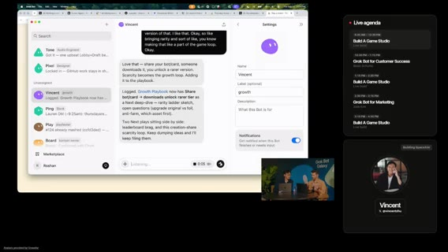
Notion ドキュメントを開いてアイデア蓄積。自動 DM の案（詳細は文脈依存）。成長施策の Continuations（アウトバウンド、通知、スパム回避）。アウトバウンドで大事なのはスパムに見せないこと。Lauren: 購読解除されないと圧倒される、と共感。セグメント境界（3:00）へ。Growth セッション継続想定。
この時間の結論: 工場の外側ループ（Slack フィードバック）と内側ループ（verification swarm）を噛み合わせる、が運用主張。Vincent 初手はシェアポップアップとカード・バイラル。アウトバウンドはスパム回避が条件。
Growth続き・Mattと事業成長
seg04 · ストリーム 3:00–4:00
アウトバウンド／メール・ゲーム類型・Growth リスト化
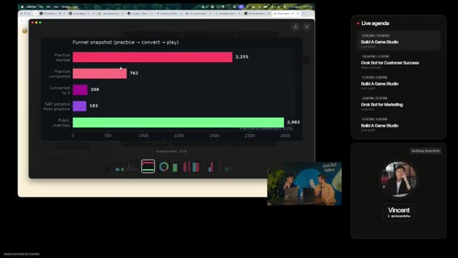
前セグメント末のスパム疲れ続き。Lauren: 件名フックより 差出人名／ベンダー名で開封判断しがち → 「誰を知っているか」が鍵。potato 名義メールで信頼を借りる案。ボットに専用メールを持たせる話。実在の勤務先メールとボット運用の境界（聞き取りやや不明瞭だが「公式感」の話）。
成長メカニクスの類型: match-3（Candy Crush 系） など他ジャンル参照、広告枠の見せ方。マーケ／成長プランへ戻る。
Growth 施策のスタックランク・ボットオンボード
ライブで Growth 施策を レバレッジ高→低にスタックランク。エージェントにも優先度付けさせ、人間と不一致なら議論。この並走そのものが一日の方法論の縮図、と元ノートは書いている。Vincent に「過去に効いた growth」を質問。マーケ vs growth の境界は会社依存。Vincent は、growth で「出さなきゃいけない数字」のプレッシャー。マーケ寄り制作物 vs growth の実験速度。
Growth は初見画面・メール文面など「初めて見る人」視点の仕事が多い。スプレッドシート／スライド等の primitive。ボットを会社のやり方にオンボードする時間がレバレッジ（話し方・進め方を教える）。
ダブルプロモ（無料枠）・公式再掲・Vincent 締め
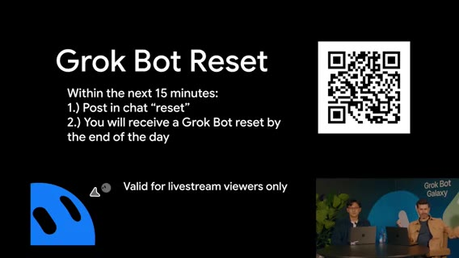
プロモ2本。ゲームのトップオブファネル＋ Grok Bot 新規。x.ai/bot（聞き取り）は、新規が次の15分でサインアップすると特典（午前の1ヶ月無料と同系統の再告知）。「無料配布は最強の growth の一つ」「心を勝つ」。Growth＝自分がユーザーならどう扱われたいか。QR 同一コードで案内。
公式は thursdayarena.com / @ThursdayArena のみ（音声ゆれ多数 → 画面・既出表記に正規化。Slack 言及は誤認の可能性あり、と元ノート）。会場は、Dreamforce 至近、下階メインステージ、上階スタジオ。
Vincent（X: Vincent Zhu 系）に感謝、growth アイデア実装へ。フォロー誘導。Vincent 退出。
決まったこと: 無料プロモをトップオブファネルに置く。公式チャネル再掲。プレイブックへの実装フォローを約束。
低音量／キュー薄（BRB 相当）
音量は完全無音ではないが Whisper cues が薄い。ステージ切替／待機の可能性（Vincent 退出→Matt セッション準備）。内容捏造なし。「We are building Thursday Arena」で再開。
再導入・Matt 参加・自動化で事業成長へ
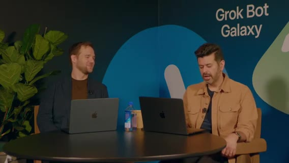
Motion は、Day3、Grok Bot Galaxy＠Dreamforce 隣。自己紹介（product @ xAI）。ゲストをすぐ紹介。成長ボット／自動化で事業を伸ばす話へ。これまで開発ループ中心だったのを、同じ手法で grow the business。Grok Bot で事業全体を組んでいること、auto-build / auto-improve エンジンの再掲。今日のテーマは、そのエンジンを事業成長側にも転用すること。
Matt にゲーム披露・Platinum・Professor X 比喩
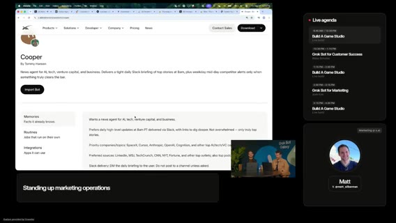
Matt（午前メインステージの Marketing Ops 文脈の人物と同一系統／収益・マーケ）にゲームを見せる。裏で UI／バグ修正も進行中のはず。Thursday Arena / thursdayarena.com。Login with X or practice。今回はログインしてランキングに乗る。
Platinum tier 到達者 9人に Congrats。Lauren の Inbot テンプレ（inbox 管理）。チューニングして自分用に、と案内。Growth 思考: X-Men / Professor X 比喩（椅子に座り全体を見る＝コンテキストを握るボット／オペレータ像、聞き取りに基づく）。「成長オペを見る席」。
ボット追加手順・他ゲーム参照・広告／メール
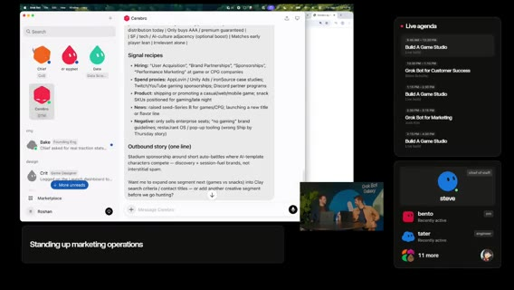
チームに新ボットを足すときの原則（誰の仕事か→どう委任か）。他インディー／カジュアルゲームの学び。概念が多く学習コストがある。すぐ 広告（画面スペース販売） 案に寄る。インプレッションを示して「ライフの一部をシェアして」と営業。コールドメール案: 「短時間でヒットしたゲームを作った」実績をフックに。単純な「広告載せませんか」でも動くことはあるが、ターゲットの信号／データを集めて解像度を上げた方が強い（「絵を高解像度に」比喩）。グッズ／アリーナ・マーチ案が自然に出る。画面広告枠販売が第一候補として浮上。
データ／ボット軍団・3,000 matches・パートナーシップ
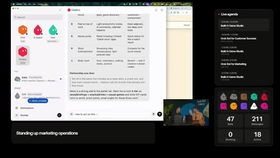
本番数時間で 3,000 matches 超。社会証明に使える。誰のためのプロダクトか（ペルソナ）。会議の合間に遊ぶ層など隣接興味。テンプレでシミュレート可能、と。「ただのボットの群れ」ではなく、文脈を回すチーム。残り約6分で次の話題へ。
Apple 系マーケット？（聞き取りゆれ）でメール送信 → Grok Bot が受信箱を監視して広告主の反応を拾う、というオフストリーム実験案。送信後、受信箱監視ボットで「食いつき」を拾うクローズドループ。パートナーシップ／マーケ motion を回したい。オフストリームで試す合意。
メインステージ接続・エージェントチームとしての Grok Bot
Matt の午前トーク（revenue / marketing options）へ接続。多くのチームを巻き込むユースケースに興奮。「これが Grok Bot。エージェントのチームとして動く」と締めに入り 4:00 境界。
この時間の結論: Growth／マネタイズはスタックランク→エージェント優先度→人間の味付け。Platinum 9名・3,000 matches・コールドメール／広告枠は後続の実装バックログに直結。パートナーシップ実験はオフストリーム継続予定。学習コストの高いゲーム概念と、課金の実装は未了。
Post-Sales（Blake）・円卓メトリクス
seg05 · ストリーム 4:00–5:00
Post-Sales と Blake の一日 OS
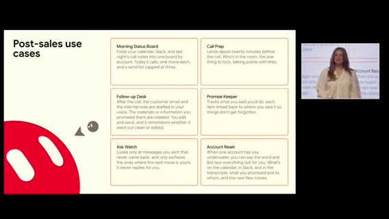
ボットは仮想コンピュータを持ち、作業完了・スクショ／録画・ポッドキャスト等まで可能。「空が限界」。難しいのは 何を終わらせたいか を考えること。Post-sales 本編。Blake = AI deployment manager：成約後に顧客が xAI プラットフォームで ROI／成功を見るまで伴走。メール・Slack・Teams・会議が山積み——同職の視聴者には馴染み深い、と。スライドは氷山の一角。詳細は声かけて、と。少し緊張気味の自己開示。
Blake が主張した一日 OS:
- Morning Status Board — 毎日同じ時刻に起きて Grok Bot を見る。当日の会議、昨夜のやり残し、セットアップ。
- Call prep（15–20分前 ping）— 誰が出るか、肩書き、前回の会話、その後に出た新機能、持ち出す提案、アンロックが必要なもの。ノート漁り不要。
- Follow-up desk（本日ライブ）— 1日の大半が会議でも、コール終了直後に Granola トランスクリプト→文脈→返信下書き→必要資料。人間は確認して送る。
- Promise keeper — 「やると言ったこと」を監視。
- Ask watch — 自分が依頼した相手の未返信を深淵から救い出す。
今日ウォークスルーする、と予告。
Gus チーム・Scout・接続・Flylow デモ仕込み
Gus = best friend / chief of staff。基本 Gus にだけ話す。Gus が 1–2 人規模の専門ボットを回す。Wally は声／専門タスクを知る。Trudy は本当に必要なとき。セットアップ時は絵文字等で人格を足すのもあり。Scout = internal radar。アカウント単位でもチームを持つイメージ。
Grok Bot はシンプル。Gmail / Calendar / Slack 等に接続。画面を見て学ぶモードも。「今忙しい」設定でデモ開始。Gus に「internal learnings call に代わりに入って」→ 「hey everybody, this is Gus, Blake's bot」。自社（デモ文脈）Flylow のブランディング更新ネタも仕込み。
Harbor ポストコール・下書きのみ・チャンピオン
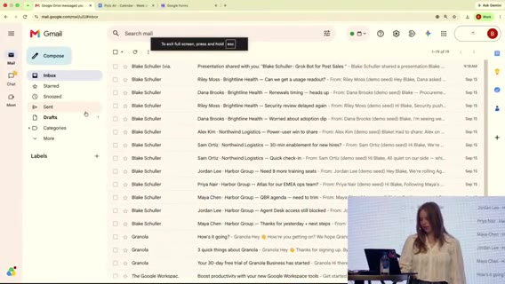
Post-call follow-ups が post-sales の肝。アカウント Harbor。「Harbor のコール終わった」だけでポストコールパック起動。今日デモ中だと Grok Bot に事前共有済み、というメタ。Gus に足りない専門性は Wally / Frankie へリレー（Harbor 担当）。
Harbor post-call pack ready。下書きだけ欲しいルール（勝手に送らない）。文体が自分っぽい、と確認。Alex へ「Harbor と話した」更新。来週 new champions ミーティング。複数アカウント展開。「where we at with Harbor?」の短い発話で Gus が文脈理解。
軽口・SSO フォロー・同僚投資・学習ループ
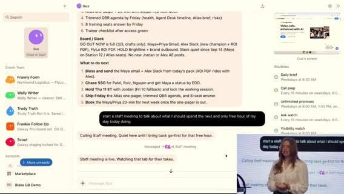
「How do you organize a space party?」など軽めのデモ。作業中に takes タブを見せる。Harbor の SSO 案件。フォロー文「protect the cap」「今すぐ出す」「余裕があれば SSO」。Scout が同意し会話が続く。送信完了。
Grok Bot への投資≒同僚／直属への投資。差分を Wally に戻しルール更新——継続学習。「自分が圧倒されるポイント」を Gus に教えたプロンプト。
Q&A：VM・マネジメント限界・sprawl・router・幻覚・aha
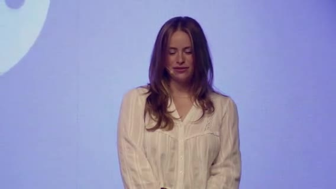
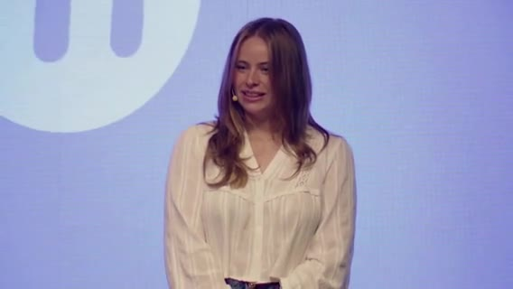
他ソフトも？ → 多くの場合 VM に直接インストール可。人と話す時間が好き——その時間を守るために後処理をボットへ。良いマネージャと同様、一度に見られる範囲には限界。委任と信頼を段階拡大。テンプレ磨き／移行時の参照残り／bot sprawl。
Grok Bot をエージェントの router に？ → 未観測だが興味。トレース可能性。何が終わったかの分析を頼む。巨大プロンプトの hallucination？ → Grok Bot ではあまり感じない。まず蒸留してから深掘り。最大 aha: 内部会議への代理参加。「複数の場所にいる」感覚。時間がない問題と同系統でトーク終了。
Blake の結論: CoS（Gus）にだけ話し、専門ボットへリレー。メールは下書きのみ。投資は同僚と同じ。router としての使い方は未観測。最大の unlock は会議代理。
無音 / BRB
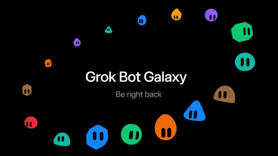
mean≈−91 dB。ステージ切替。発言なし。
円卓：1000 users / 3500 practice / ファネル議論
復帰。10am がピーク。ボット要約: 1000+ users、3500 practice、勝率 47%（エンジン調整余地）。ファネルは今は急がない理由: サインイン強制の強い理由がまだ弱い／practice でも楽しい／計測定義（practice 中の Login with X）を疑う必要。次ウェーブで signed-in 向けエンゲージを厚くする。
サインアップ／practice 開始の時系列。growth グラフに驚き。ゲームデザイン／3D／グラフィックボット稼働。プレイ中ユーザー ティッカーを配信中に追加。改善デモ要求で 5:00 へ。
決まったこと（見方）: サインイン強制は急がない。practice の楽しさを壊さない。ティッカー追加。勝率 47% はエンジン調整余地。
残ったこと: ファネル定義（practice 中の Login with X）への疑い。signed-in 向けエンゲージは次ウェーブ。
オートバトラー磨き・大企業・Dan
seg06 · ストリーム 5:00–6:00
モバイル・ティッカー・オートバトラー解説
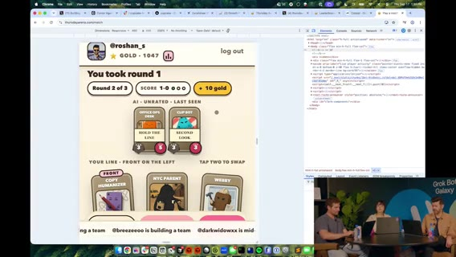
「本当に mobile friendly」。ダメならフィードバックを。UI 大量改修。ボタン配置の残り課題。下部ティッカー好評。
「このゲーム何？」→ auto-battler に着地。ボットチームをドラフトし、相手チームとマッチ。各ボットに能力／ステータス。順序付きラインナップ（例: 3体）。相手並びに対向。残存が多い側がラウンド勝利。ターンごとにアビリティが順に解決。対戦前に相手の数値（例 3/5 と 3/3）が見える。自カード能力が見えにくい UI 課題 → エンジニアに相談。
決まったこと（説明）: ジャンル説明は auto-battler。3体ラインナップ、残存が多い側がラウンド勝利。
残ったこと: 自カード能力の可視性。ボタン配置。
試合・SFX・シェア勝ち・Potato Mode 修正
現行ラインナップで試合。SFX／疑似バトル音楽を戻したい。午前の Vincent（Growth）会話を想起。Cloud agent + Potato Mode: 勝利シェア機能を実装せよ、と指示。ロビーカード配置も修正中。ティッカーがボタンを隠すバグ → 修正依頼。結果画面も。Potato Mode で inspect→fix。「コードを書く前に調査」を明示。エージェントが画面を歩きスクショでバグ特定——コード未経験者にも楽しい、と。
Feedback ボタン・xAI ボイスエージェント
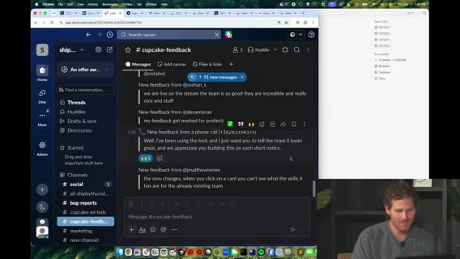
ホームの Send feedback。バグや要望を送って、と。確認できれば自動修正まで。xAI voice agents の遊び。電話応答エージェントを GUI で素早くデプロイできるデモ。モデレーション同様のガードレール。視聴者の温かい言葉をボイス経由で受け、チームへ転送された、という実演。
大企業オペ・エスカレーション・自ボット投入
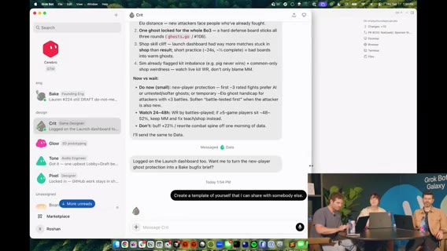
自動化で少人数が大企業のように回る。ユーザー代理行動／escalate issue ツール構想。チャンネル命名、プラン作成支援。Lauren が社内プロダクトでも同種セットアップ。自分の Grok Bot をゲームにインポートする案。UI polish エージェント稼働。Cursor で並行作業。
デザイン知識・ヒューマンタッチ・課金摩擦・カード＝実ボット
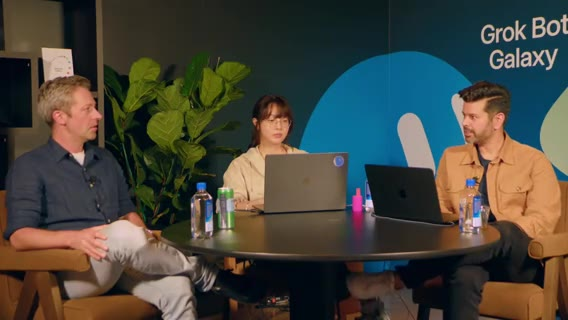
ベース UI／Radix 等の語彙があると指示が楽。human touch も残す、と。小さな課金（例 $10 パック）でも決済・メール・プロビジョニングが面倒。エージェントを回しても最後に手動が残る問題。practice のカードは実在 Grok Bot キャラがモチーフ。動作 OK。
残ったこと: 課金は決済・メール・プロビジョニングが手動残り。human touch は残す方針。
GTM ボット・計画の言い直し・Dan・UVP
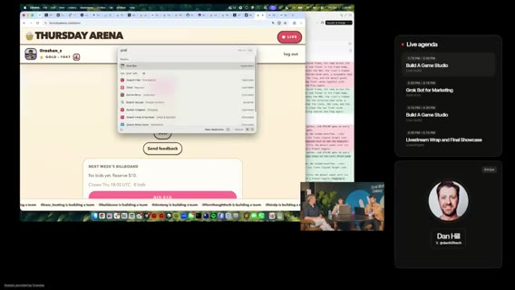
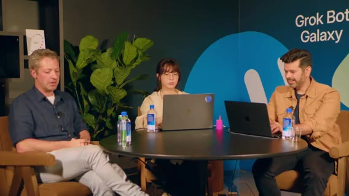
GTM／マネタイズアイデア記録ボット。公式ボットのフィーチャー、ロールアウト中機能のティーズ。エージェントに 計画を自分の言葉で言い直させる（Lauren の技）。有料マルチチーム戦など。ゲスト Dan（X ハンドル画面表示）。工場が回っている様子。コンシューマ／UVP の話で締め、次の Marketing 本編へ橋渡し。
この時間のスタジオ結論: ジャンルは auto-battler と説明できた。勝利シェアとティッカーバグは Potato Mode で潰す方向。自ボット Import が次の体験案。課金の手動残りは未解決。
Josh Marketing・円卓復帰
seg07 · ストリーム 6:00–7:00
カットオーバー
Dan の 3JS／テンプレ話の流れ。X ハンドルを画面に出しフォロー誘導。Dreamforce 隣メインステージへ。Josh Kim「Grok Bot for Marketing」。戻ってきて続き、と予告。
Josh：thought → doing、ジョブ単位ボット
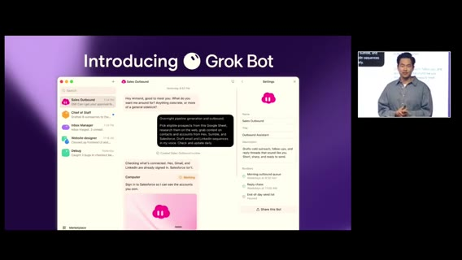
Josh Kim。xAI マーケでの使い方と、視聴者がチームで始める方法。多くの人の AI は 1–2 チャットを thought partner（質問・戦略・コピー。社内では copylates と呼ぶ、という発話あり）に留まる。doing partner ではない。
汎用／特化エージェントの台頭。Grok Bot でマーケが実際に仕事を進められる。always-on 非同期チームメイト。自動化だけでなく ボットのチームにやらせる。ジョブごとに個別ボット。使い続けるほど自分の働き方にカスタムされる。MCP 等でツール接続し、人間と同じようにツールを使える点が独自。他ツールとの違い／シンプルさ。babysit しなくても仕事を終わらせる、というのが意図。
エンドツーエンド・キャンペーン・職能ボット
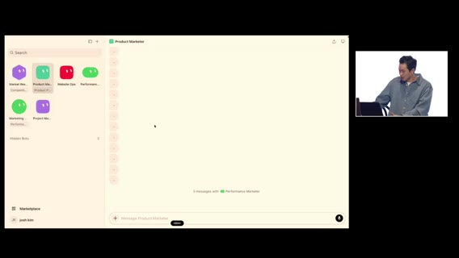
ゼロからエンドツーエンドでマーケキャンペーンをローンチするデモ。舞台裏の多さ。従来は人が職能間でパスする。スライドは単純に見えても裏側は多い、と。
Josh のマーケ「チーム」: プロダクトマーケ、Web ops、パフォーマンス、アナリスト、PM 等（全部自分で作ったわけではない、と正直）。ホームページをピン留めし、市場理解から開始。Market researcher が競合サイト／ポジショニングを見る。dictator prompt（一気に指示）も使用。一人のボットと深くやる／職能ボットに渡すハイブリッド。並列キックオフも可。「新機能キャンペーンを出す」型の依頼。Market researcher 完了 → Product marketer へ。複数マーケ面（2–3 surfaces）。ボット間コラボ開始。
分析引き継ぎ・LP・本番シップ
Market researcher の分析を次ボットが掴んだ、と実況。ポジショニング／パッケージングの議論。LP 反映・ランディング公開の流れ。シェルキャンペーン開始（ad group 名、URL 等）。website ops へ。進捗モニタ継続指示。マーケサイトへ新 LP をシップ。バックエンドでリポ接続済み。本番シップまで行ける、と強調。テンプレ化も可（スナップショットとして専門性をボットに入れる）。
運用・単一接点・原則・Thank you
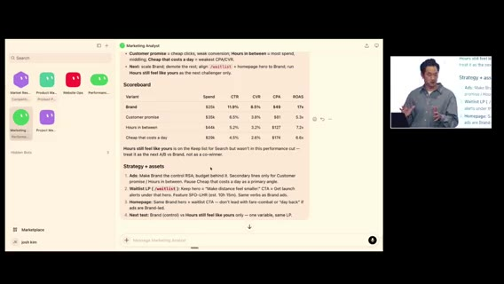
成果物のコピー利用、今週すでに出したキャンペーンの続きをアナリストへ、ボット内でキャンペーン構築。パフォーマンス側は予算／カードも見る。Google Ads から winner が見える、という実況。そのボットを唯一の接点にする（他ボットには直接話さない）。PM ボットが5専門家を学習し、prod まで一箇所から push。学びの振り返り。任せる／監督する原則。スコープを正しく切り、必要なアクセスを与える。Thank you / 拍手。マーケットプレイスへボットを載せる話も出た。
Q&A
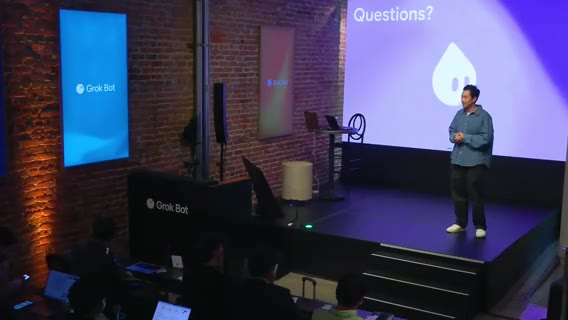
ノートに残っている質問の骨子は次のとおり。答えの全文はノートが薄いので、聞き取れた範囲だけ書く。
- 王国の鍵は渡さない——権限。xAI のエンジニアがいる前提で、段階的に、という方向の発話。
- 最大ブロッカーは？ — 重要なとき Josh にメッセージする、改善は続く、という断片。
- ただの別 LLM 扱いするな。
- イニシアチブをグループチャットで回す比喩／簡単導入。人格のあるボット、という話。
- Grok Bot ↔ grok CLI？ — 本人は自分ではやっていない、他のコーディングツールでも harness として同様にできる、という断片。
- 企業アルファ／機密漏洩の garanty は？ — ルール／規制、学習用データビュー、という断片まで。詳細はノートにない。
クールな反応で Q&A 終盤。
Josh の結論: AI を考えパートナーで止めず、職能ボットのチームで本番までシップする。単一接点（PM／CoS）で監督。権限は段階的。Q&A の詳細答えはノートが薄い。
円卓復帰
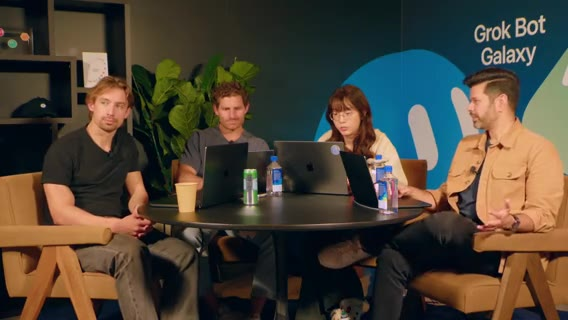
新機能を大量実装中。今日の作業の説明、サインアップ／Sign in with X。反応と軽い挨拶で 7:00 へ。
最終時間・工場デモ・クロージング
seg08 · ストリーム 7:00–終了
ボット増殖・Import・ドラフト実況
気が散りやすい、という個人的導入。Grok Bot が出た当初は1ボット、特定ユースケースから PM ボット等が spawn。Notion 連携の話。Eric 説明のボットを URL から Import。ゲーム内ボットは実在 Grok Bot がモデル。能力例（最前列+2攻撃等）。コモンはトークンコスト。インセクト等のカードがプールからランダム。強いカード／パワーアップ（りんご購入等）。頻出バグ報告あり。スロットへドラッグ。トークン残7。意図的に速くシップ（バグも出るが速さ優先だった）。「勝つ」実況。再戦。見た目とクリック先の不一致バグ等。4勝0敗表示、SQL ジョーク、エージェント稼働中、という現場トーク。
音楽・ティッカー有料化ネタ・ボイス・工場
Spotify。広告ティッカー案。課金で特別色、等。下部ティッカーがお気に入り機能の一つ。週次 ads auction でピン有料行、という案も発話に出る。xAI ボイスエージェント利用。Matt のプロダクション画面。修正をスピンアップ中。Cursor プロジェクト。UI リフレッシュ。loop ボット＝エンジニアリング寄り。Potato Mode と verification のミックス。探索をスクショ／動画付きで X 投稿するボット案。200本超の PR、という最終時間の数字。以降キューが細り休憩帯へ。
休憩／キュー薄
「10分休憩」とアナウンス。低音量。発話キューほぼなし。最終時間宣言で再開。
最終時間・$200 クレジット・工場デモ
Day3 最終時間。ゼロから事業を Grok Bot で。強く締めたい。チャット向けプロモ: 当日中 $200 相当 Grok Bot クレジット（聞き取り。午前の1ヶ月無料と同系統の金額）。熱いうちに。「これで会社が建つ」「ちょうど10分休憩した」。
Lauren は、アニメ改善を Matt に見せ PR 予定（mega PR の示唆）。フィードバック監視→ Cursor cloud agents。静的な過去マッチ等の repro／テスト後マージ。API キー露出に注意、と実況。工場が issue を直している様子。
ラップ・tutorial・学び・unship
一日ラップアップ用にボットへ指示。Dr.Eggbot（ボット作成ボット）のディシプリン。プレイ tutorial がようやく。フィードバック取得システム全体。サイトを agent friendly にする話。人に届くものを作る／パートナーシップ／セールスの必要性。GTM の多面。ライブ発表で試してもらいやすい、標準事業プレイブック、ボットに変えて回し続ける、という学び。「どう仕事を終わらせるか」が強力。次を速くシップすると同時に、何を unship するか。コアループに集中できてきた。別戦場を足す案もあるが、許可・ケータリングなど Day1 の重い道も引き合いに出る。最終質問へ。
最終メトリクス・Dr.Eggbot・Thanks
最終メトリクス。サインアップ感謝。あと数分。@grok 等。potato は、Dr.Eggbot にボット作成を任せてきた振り返り。ゲームスタジオが「それなりに」建った。マネタイズ要素の最終チェック。Thanks。オーナーシップの軽いやり取り。「theoretical leadership」ジョークで終盤（≈7:58:21）。
締めの結論: 会社（ゲームスタジオ）は公開された。工場と Dr.Eggbot がボット量産の型。tutorial とフィードバックループはようやく形。マネタイズは最終チェックまでで、実装完了とは書いていない。unship してコアループに集中する、が残った宿題。
読み返し用：誰が何を結論づけたか
製品側（Matthew / Cal Day / Vincent / Blake / Josh）が一日を通して繰り返した主張は、ほぼ同じである。Grok Bot はチャットボックスではなく 役割を持った同僚 である。自前コンピュータとクラウド常時で仕事を終わらせる。仕事はチャンクに分解し、下書きまで任せて人間が最終判断する。権限は把握したうえで渡し、出荷前に戻す。グループやマルチプレイヤーは需要があるが、Matthew 時点では「まもなく面白いもの」と示唆のみ。Blake は会議代理が最大の aha。Josh は thought partner で止めず本番までシップせよ。Cal Day は 50M 行規模では手動検査が限界で、エンジニアはエージェント監督へ移る、と言った。
スタジオ側（Matt / Motion / Lauren）が三日目に実際に進めたのは、Thursday Arena の公開である。コードネーム Cupcake の auto-battler を Clerk / Vercel / PlanetScale に載せ、Potato Mode + peestack の工場で PR を回し、Play が QA、Launch pulse が指標を吸い、Slack フィードバックを内側ループへ戻した。公式は thursdayarena.com と @ThursdayArena のみ。数字は 1000+ users / 3500 practice / 3,000 matches 超まで伸びた。ゼロイチの見方は「人が遊んでいるか」。
スタジオ側が一日で決めきれなかったのは、マネタイズの実装である。広告枠、コールドメール、ティッカー有料化、カード・バイラル、自ボット Import、$10 パックは議論とオフストリーム実験まで。Elo／マッチメイクは loss heavy のまま。課金の決済・メール・プロビジョニングは手動が残る。favicon / SEO は後回し。ホストの締めは、ゲームスタジオはそれなりに建った、次は速くシップすると同時に unship してコアループへ、である。